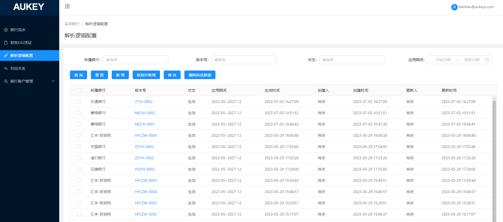

1.按钮控制说明：
【新增】：弹窗新增【法人主体】搜索框：下拉单选，选项包括‘境内法人’和‘境外法人’；——详见原型1
选择法人类型和所属银行后，按照【法人类型+所属银行】维度校验列表是否存在重复数据（原逻辑仅按所属银行校验）：不重复则支持录入【版本简称】，重复按【法人类型+所属银行】取已维护的【版本简称】，其他逻辑不变；
——原逻辑v6.6.2实体银行/解析逻辑配置2.2
2.列表：首列新增【法人类型】字段；当用户暂存或提交解析逻辑配置，并在当前页面生成数据时，对应字段值为新增时所维护的【法人类型】；

法人类型